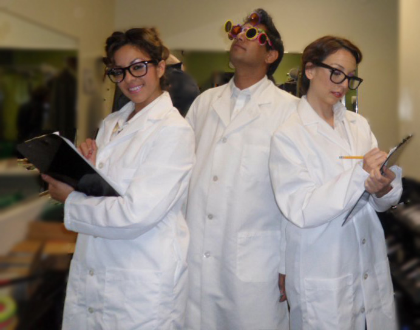

Where are you located?
At the Stanford Canary Center for Cancer Early Detection!
3155 Porter Drive, Palo Alto, CA 94304
How do I get there?
Drive, Bike or take Marguerite (V, 1050A or RP lines - map)
Are you hiring?
We do not currently have any openings in the lab.
Do you collaborate with industry?
Definitely.
What is proteomics?
Check out my review - if you still have questions - email me...
Do you have a wet lab?
Absolutely. My group believes strongly in tight integration between experimental approaches and rigorous computation.
What cancers do you focus on?
We have expertise predominantly in cancers of the lung, prostate and pancreas as well as in lymphoma. However, we focus on developing approaches that might be general across a wide range of biology. For example, we also do work in Alzheimer's Disease and Multiple Sclerosis.
Are you actually a magician/juggler?
Yes. I've performed all over the world for audiences of thousands of people. Among the highlights of my life was writing an article for Vanish Magazine (the premier magazine for magicians). Check out my nifty article on 'What Scientists can learn from Magicians'!
For booking information, please contact my agent.
Kevin Bacon number?
2. Parag was in 'How things work' that was Narrated by Gabe Doran who was in 'The Following' with Kevin Bacon.
Erdos number?
3. [Anyone with a 1 interested in collaborating...] Parag published a paper with Matteo Pellegrini who published a paper with Bruce Rothschild who published two papers with Erdos.
Sabbath number?
3. Parag performed with Josh Rogosin at CAMP. Josh audio engineered for Peter Frampton at Tiny Desk. Peter Frampton performed with Black Sabbath September 5, 1975.
I heard you are a youtube sensation...
Not really - but people seem to like this video: http://youtu.be/x2oSw7texpY
I do also have a podcast.
I think your research is awesome and would love to support it...
Awesome! Thank you! We love and appreciate donations. Shoot me an email at paragm at Stanford dot edu!
What's your favourite paper?
Tough question! Possibly...this or this or this or this ... or possibly this...
What non-profit's do you support?
Canary Foundation, Habitat for Humanity, Ada's Cafe, Sempervirens Fund, GiveWell, My Friend's Place, Homeboy Industries, water.org are some of my (less well known) favourites.
Can you really trace your scientific ancestry back to Galileo?
Yes. Kinda nifty, huh?
What are your thoughts on chicken nuggets?
I think they are fantastic actors.
Do you have a lab dress code?
Yes. Lab coats and goggles must be worn at all times. Clipboards are optional, but strongly recommended.

Are these actually Frequently Asked Questions?
Shockingly - yes - many of them are!